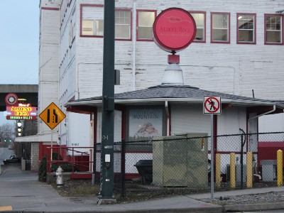
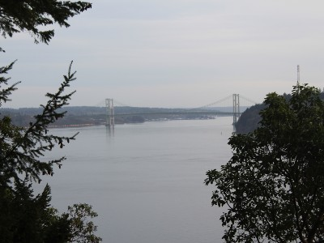
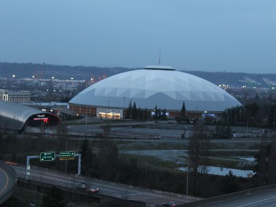

Demographic Information
Tacoma is the third largest city in the state of Washington. The population as on 2010 census was 198,387. With a population density of 3,864.9 per square mile. The population is for 2019 is estimated at 217,827. The city has an area of 62.42 square miles.
Things you will find in Tacoma
Here is the Almond Roca factory which is located in Tacoma.
Here is the famous Tacoma Narrows Bridge once called Galloping Gertie
Here is the Tacoma Dome and the Lemay Car museum.